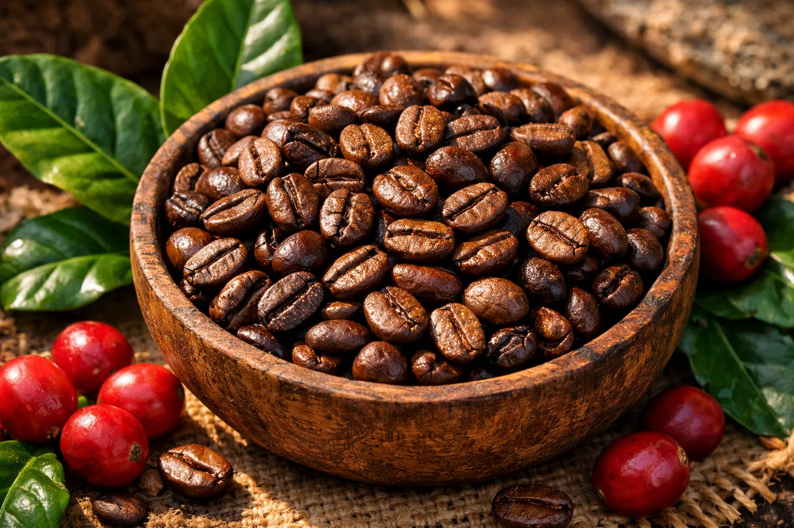
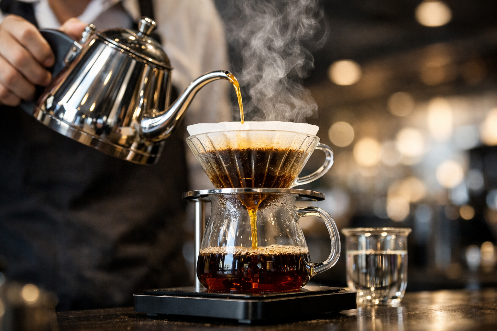
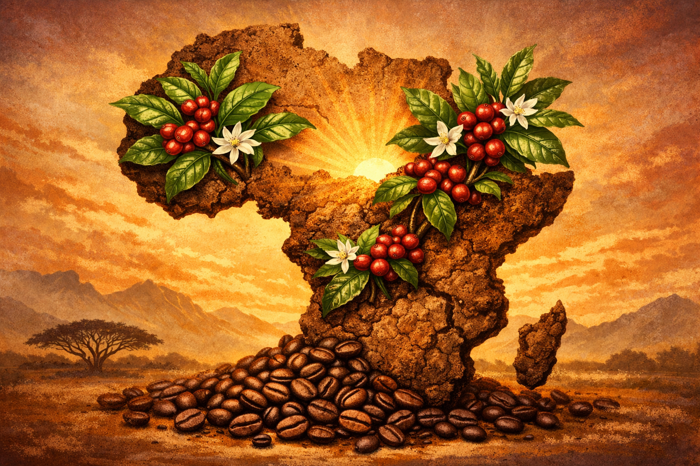
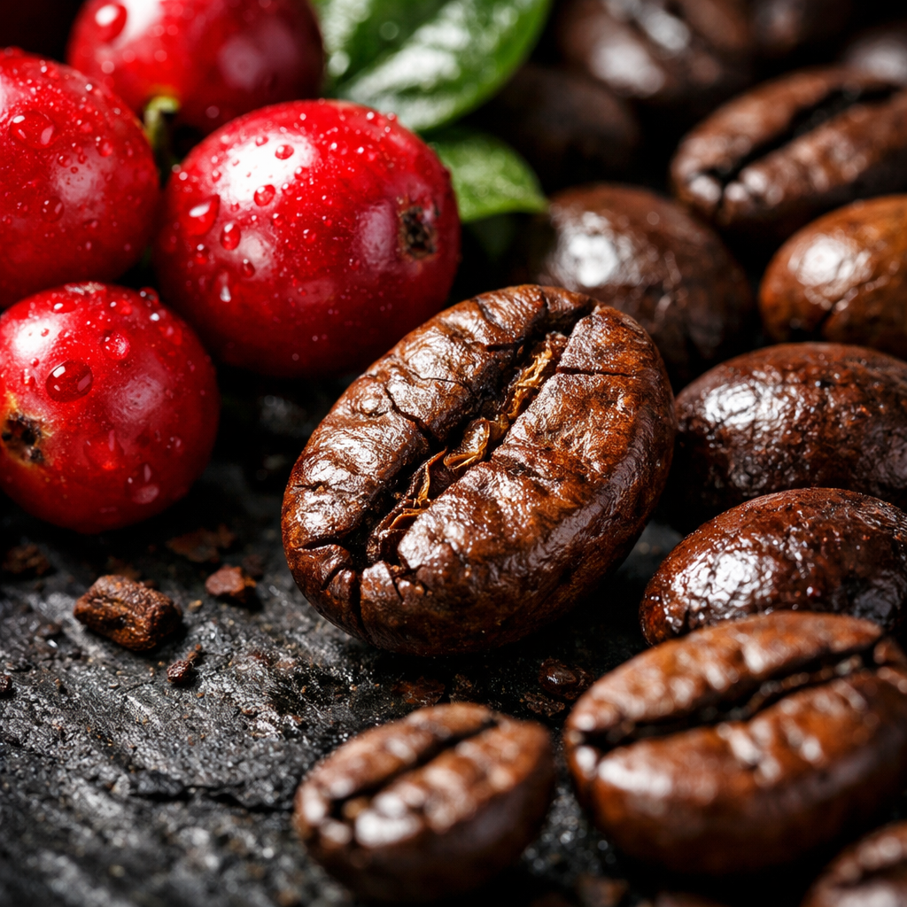
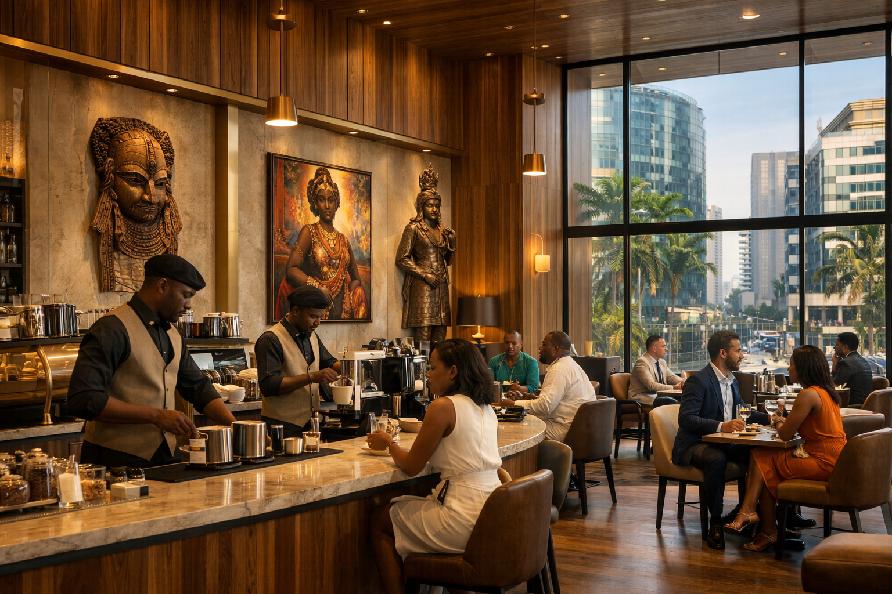

Le Bénin : Un Terroir d'Exception en Pleine Éclosion
Le Bénin, souvent méconnu pour sa production caféière, est en réalité une terre promise pour le Robusta. Avec des initiatives audacieuses et une volonté de fer, le pays se positionne comme un acteur clé de l'innovation et de la qualité en Afrique de l'Ouest. Plongez au cœur de cette renaissance et découvrez les saveurs uniques que le Bénin a à offrir.

Robusta Béninois : Force et Caractère
Le Robusta béninois est célébré pour son corps puissant, sa faible acidité et ses notes aromatiques distinctives de chocolat noir, de noix et parfois de fruits secs. Cultivé principalement dans les régions du Zou, de l'Atlantique et de l'Ouémé, il bénéficie d'un climat idéal pour développer toute sa complexité. La filière, en pleine structuration, met l'accent sur des pratiques agricoles durables et une traçabilité irréprochable, garantissant un produit d'une qualité supérieure.
La Renaissance de la Filière : Vision 2025-2026
Le gouvernement béninois, en collaboration avec des partenaires internationaux, a lancé un plan stratégique ambitieux pour la période 2025-2026. Ce plan vise à moderniser les infrastructures de production et de transformation, à former les agriculteurs aux meilleures pratiques et à promouvoir le café béninois sur les marchés mondiaux. L'objectif est de doubler la production d'ici 2030, tout en assurant une juste rémunération aux producteurs et en préservant l'environnement. C'est une véritable révolution verte qui s'opère, avec le café comme fer de lance.

Les Secrets des Saveurs Locales : Épices et Traditions
Ce qui rend le café béninois véritablement unique, c'est son mariage ancestral avec les épices locales. Le gingembre frais apporte une chaleur piquante, les clous de girofle une profondeur boisée, et le poivre long (Kili) des notes complexes de muscade. Ces mélanges, souvent transmis de génération en génération, transforment chaque tasse en une expérience sensorielle inoubliable. Découvrez également l'astuce surprenante du sel, utilisée pour sublimer les arômes et réduire l'amertume, une preuve de l'ingéniosité culinaire béninoise.
L'Épopée du Café : De l'Afrique aux Continents du Monde
Le café est une histoire universelle, un voyage qui a commencé sur les hauts plateaux éthiopiens et qui a conquis le monde. Chaque continent, chaque région, a apporté sa touche unique à cette boisson millénaire, créant une mosaïque de saveurs et de cultures. Embarquez pour un tour du monde des cafés et explorez la richesse de leurs terroirs.

L'Afrique : Berceau et Futur du Café
L'Afrique est le continent originel du café, avec l'Éthiopie comme berceau de l'Arabica et ses cérémonies sacrées du « Buna Tetu ». Aujourd'hui, l'Afrique est un acteur majeur, avec l'Ouganda en tête des exportations africaines (2024-2025) et des pays comme le Kenya et la Tanzanie produisant des Arabicas d'exception. Le continent est un réservoir de biodiversité caféière, offrant des profils aromatiques allant des notes florales et fruitées aux saveurs plus corsées et épicées. C'est une source inépuisable d'innovation et de tradition, où chaque tasse raconte une histoire millénaire.

Amérique Latine : L'Empire de l'Arabica
L'Amérique Latine est le plus grand producteur mondial de café, dominée par le Brésil et la Colombie. Cette région est le royaume incontesté de l'Arabica, offrant une diversité de saveurs allant du doux et équilibré au fruité et acidulé. Les cafés d'Amérique Latine sont souvent caractérisés par des notes de chocolat, de caramel, de noisette et d'agrumes, avec une acidité vive et agréable. Des pays comme le Costa Rica, le Guatemala et le Pérou sont également réputés pour leurs cafés de spécialité, cultivés avec soin dans des conditions idéales d'altitude et de climat, et souvent certifiés biologiques ou équitables. C'est une région où la passion pour le café se transmet de génération en génération, avec un savoir-faire inégalé.
Asie : La Puissance du Robusta et l'Exotisme des Saveurs
L'Asie a émergé comme une puissance majeure dans la production de café, notamment grâce au Vietnam, qui est le deuxième producteur mondial et le premier pour le Robusta. Le Robusta asiatique est connu pour son corps puissant, son amertume prononcée et sa teneur élevée en caféine, très prisé pour les mélanges d'espresso. L'Indonésie, avec ses îles volcaniques, offre des cafés aux saveurs uniques et complexes, comme le célèbre Kopi Luwak, ou les cafés de Sumatra aux notes terreuses, épicées et boisées. L'Inde et la Thaïlande contribuent également à cette diversité, proposant des cafés aux profils aromatiques audacieux et exotiques, souvent cultivés sous ombrage. L'Asie est un continent de contrastes, où la tradition rencontre l'innovation dans le monde du café.
Coffee Shops d'Exception : Vos Adresses Incontournables
Découvrez notre sélection exclusive des coffee shops les plus modernes et élégants, où l'art du café rencontre une ambiance unique. Que vous soyez à Cotonou, Lagos, Dakar ou ailleurs, trouvez votre prochaine destination caféinée et laissez-vous transporter par des saveurs exquises et des designs inspirants.
🇧🇯 Cotonou, Bénin : L'Élégance Urbaine
Koukas Cotonou Coup de ❤️
Le nouveau joyau de Cotonou. Un design épuré, des pâtisseries exquises et un café de spécialité qui ravit les palais les plus exigeants. Idéal pour un moment de détente ou un rendez-vous professionnel dans un cadre ultra-moderne.
Café de la Fondation Zinsou
Alliez culture et café dans ce lieu emblématique. Profitez d'un excellent café dans un cadre artistique et paisible, parfait pour la réflexion et la créativité, au cœur de l'effervescence culturelle de Cotonou.
Oudy K Sô x Fourmé
Un espace moderne et stylé, offrant une expérience café contemporaine. Le lieu parfait pour les amateurs de design et de saveurs innovantes, où chaque détail est pensé pour le plaisir des sens.
Le Mak (Haie Vive)
Un lieu convivial et internationalement reconnu, offrant une atmosphère chaleureuse et une sélection de cafés pour tous les goûts. Un incontournable pour les habitants et les visiteurs en quête d'authenticité et de qualité.
🇳🇬 Lagos, Nigeria : La Dynamique Caféinée
Kaldi Coffee
Le pionnier de la torréfaction de spécialité au Nigeria. Découvrez des grains frais, locaux et internationaux, torréfiés avec passion. Un lieu où l'art de la torréfaction est élevé au rang de science, pour des saveurs inégalées.
Art Cafe
Un havre de paix artistique où chaque tasse est une œuvre. Ambiance bohème et créative, idéale pour s'évader et stimuler l'imagination, au cœur de la vibrante scène artistique de Lagos.
Café Neo
Une chaîne africaine en pleine expansion, mettant en avant les grains du continent. Un incontournable pour un café de qualité constante et une ambiance moderne, parfaite pour le travail ou la détente.
🇸🇳 Dakar, Sénégal : L'Élégance Africaine
Layu Café
Un design moderne inspiré de la culture sénégalaise, offrant un cadre idéal pour le télétravail et la dégustation de cafés raffinés. Un lieu où l'esthétique et le goût se rencontrent pour une expérience unique.
Simone Cafe
Un lieu chaleureux et gourmand, réputé pour ses desserts et son ambiance accueillante, parfait pour une pause détente entre amis ou en famille, au cœur de la capitale sénégalaise.
🇰🇪 Nairobi, Kenya : Le Cœur de l'Arabica
Connect Coffee Roasters
Engagés dans une démarche "Seed to Cup", ils proposent des cafés d'exception avec une traçabilité irréprochable et des saveurs uniques. Une immersion totale dans le monde du café de spécialité, de la graine à la tasse.
Java House
L'institution est-africaine du café. Un lieu incontournable pour un café de qualité constante et une ambiance animée, parfaite pour découvrir la culture caféinée de Nairobi.
L'Œil de Kevin : Moments & Inspirations Caféinées
Suivez le parcours de Kevin à travers l'Afrique et le monde, entre spiritualité, fierté béninoise et une passion inébranlable pour les terroirs africains. Découvrez ses coups de cœur, ses réflexions et ses moments café inspirants, capturés à travers l'objectif de son appareil.
#AfricaCoffee #TerroirAfricain #PassionCafe
#Benin #FierementBeninois #Cotonou #NouvelAn2026

Inspiration : L'élégance d'un coffee shop moderne à Cotonou, où chaque détail est pensé pour une expérience café parfaite.
L'art de la préparation : La précision du barista pour révéler toutes les nuances aromatiques du café. Un geste, une passion.

Communauté : Un espace vibrant où les passionnés de café se rencontrent, échangent et partagent leurs expériences.
Le rituel : La beauté intemporelle d'un café fraîchement préparé, promesse d'un moment de pur plaisir.
Café et Santé : Les Dernières Révélations Scientifiques
Le café, bien plus qu'une simple boisson stimulante, est un véritable élixir de bien-être. Les recherches scientifiques les plus récentes (2025-2026) continuent de dévoiler ses multiples vertus, transformant notre perception de cette boisson ancestrale. Découvrez comment le café peut devenir un allié précieux pour votre santé au quotidien.
🧠 Neuroprotection Avancée et Cognition
La consommation régulière de café est fortement corrélée à une amélioration significative des fonctions cognitives. La caféine, en synergie avec les antioxydants, agit comme un bouclier neuroprotecteur. Des études récentes (2025) ont démontré une réduction des marqueurs inflammatoires cérébraux et un ralentissement de la progression de maladies neurodégénératives telles qu'Alzheimer et Parkinson. Le café stimule la vigilance, la concentration et la mémoire à long terme, faisant de chaque tasse un coup de pouce pour votre cerveau.
❤️ Santé Cardiovasculaire et Longévité Accrue
Les craintes passées concernant l'impact du café sur le cœur sont aujourd'hui largement réfutées. De nouvelles méta-analyses (2026) confirment que le café, consommé avec modération (3 à 5 tasses par jour), est associé à une réduction du risque de maladies cardiovasculaires, d'accidents vasculaires cérébraux et d'insuffisance cardiaque. Ses composés bioactifs améliorent la fonction endothéliale, réduisent l'inflammation systémique et contribuent à une meilleure régulation de la pression artérielle, favorisant ainsi une longévité en pleine santé.
✨ Puissant Antioxydant et Anti-âge Cellulaire
Le café est une source exceptionnelle d'antioxydants, surpassant souvent les fruits et légumes dans l'alimentation occidentale. Les polyphénols et les acides chlorogéniques qu'il contient combattent activement les radicaux libres, responsables du stress oxydatif et du vieillissement prématuré des cellules. Une étude innovante (fin 2025) a même mis en évidence un effet anti-âge au niveau cellulaire, suggérant que le café pourrait contribuer à préserver l'intégrité de notre ADN et à prolonger la jeunesse de nos tissus.
📊 Régulation Métabolique et Prévention du Diabète
L'impact du café sur le métabolisme est également très positif. Il améliore la sensibilité à l'insuline et la régulation du glucose, des facteurs clés dans la prévention du diabète de type 2. De nombreuses études épidémiologiques ont montré une corrélation inverse entre la consommation de café et le risque de développer cette maladie chronique. De plus, la caféine stimule le métabolisme basal et favorise la thermogenèse, contribuant ainsi à la gestion du poids et à la combustion des graisses, un atout non négligeable pour une vie saine.
L'Art Subtil de la Préparation : Secrets, Rituels et Innovations
De la sélection minutieuse des grains à la dégustation finale, chaque étape de la préparation du café est une cérémonie. Découvrez les méthodes ancestrales, les innovations technologiques et les astuces transmises de génération en génération, avec un éclairage particulier sur les pratiques béninoises qui subliment chaque tasse.
La Torréfaction : Révéler l'Âme du Grain
La torréfaction est l'alchimie qui transforme le grain de café vert, inodore et insipide, en un joyau aromatique. C'est un processus délicat, où la maîtrise de la température et du temps est essentielle. Une torréfaction artisanale permet de développer des profils aromatiques complexes : des notes fruitées et florales pour les torréfactions claires, aux saveurs chocolatées, caramélisées et épicées pour les torréfactions plus foncées. Au Bénin, des maîtres torréfacteurs perpétuent ce savoir-faire, sublimant le Robusta local pour en extraire toute la richesse.
Astuces Béninoises : Le Café Sublimé par les Épices
Le Bénin, terre d'épices, offre des traditions uniques pour enrichir le café. Le gingembre frais, avec sa chaleur vivifiante, les clous de girofle pour leur parfum boisé, et le poivre long (Kili) aux arômes complexes, sont autant d'ingrédients qui transforment le café en une boisson sensorielle. Ces mélanges ne sont pas de simples ajouts ; ils sont le reflet d'une culture culinaire riche, où le café est une invitation au voyage des sens, un héritage gustatif transmis avec fierté.
Le Secret du Sel : Une Tradition pour Réduire l'Amertume
Une pratique ancestrale béninoise, surprenante pour beaucoup, consiste à ajouter une infime pincée de sel au café moulu avant l'infusion. Loin d'altérer le goût, le sel, en très petite quantité, a la capacité de neutraliser l'amertume naturelle du café, permettant ainsi aux saveurs plus douces et complexes de s'exprimer pleinement. Cette technique révèle une nouvelle dimension gustative, rendant le café plus rond et agréable en bouche, et témoigne de l'ingéniosité des traditions locales pour parfaire l'expérience café.
Le Café de Rue Béninois : Une Expérience Authentique
Au Bénin, le café est aussi une affaire de rue, un rituel quotidien et une expérience sociale incontournable. Dès l'aube, les vendeurs ambulants proposent un café fort et sucré, souvent préparé avec du lait concentré, servi chaud dans de petites tasses. C'est un moment de partage et de convivialité qui anime les villes. Cette immersion authentique dans la culture locale offre un café simple mais réconfortant, une occasion unique d'observer le dynamisme et la chaleur humaine des villes béninoises, où chaque gorgée est un lien social.
Culture et Anecdotes : Les Histoires Fascinantes du Café
Au-delà de sa saveur, le café est imprégné d'histoires, de légendes et de traditions qui ont façonné son parcours à travers les siècles et les continents. Plongez dans l'univers mystérieux et captivant des anecdotes caféinées, où chaque légende enrichit la magie de cette boisson.
La Légende de Kaldi : L'Origine Éthiopienne du Café
L'histoire la plus célèbre et la plus poétique sur l'origine du café nous vient d'Éthiopie, berceau de l'Arabica. La légende raconte qu'un berger nommé Kaldi, intrigué par l'énergie débordante de ses chèvres après qu'elles aient brouté les baies rouges d'un arbuste inconnu, décida d'en goûter lui-même. Il ressentit alors une vitalité nouvelle et une clarté d'esprit. Partageant sa découverte avec les moines locaux, ces derniers, d'abord sceptiques, finirent par adopter la boisson pour rester éveillés durant leurs longues prières nocturnes. Ainsi naquit la boisson qui allait conquérir le monde, une histoire de hasard et de découverte.
Le Café Touba : Un Symbole de Spiritualité au Sénégal
Le Café Touba, originaire du Sénégal, est bien plus qu'une simple boisson ; c'est un symbole culturel et spirituel fort, profondément lié à la confrérie mouride. Ce mélange unique de café et de poivre de Jar (Xylopia aethiopica), également appelé poivre de Guinée ou Kili, offre un goût épicé et puissant. Sa popularité s'est étendue à toute l'Afrique de l'Ouest, où il est apprécié non seulement pour ses qualités gustatives, mais aussi pour son rôle dans les rassemblements sociaux et religieux, incarnant la convivialité et la tradition. Chaque tasse est une connexion avec l'héritage spirituel.
Les Cérémonies du Café Éthiopiennes : Un Rituel Sacré
En Éthiopie, la préparation et la dégustation du café sont élevées au rang d'art et de rituel social, connu sous le nom de « Buna Tetu ». Cette cérémonie, qui peut durer plusieurs heures, est un moment de partage et de convivialité. Elle commence par la torréfaction des grains verts sur un brasero, suivie de leur mouture et de l'infusion dans une jebena (cafetière traditionnelle). Le café est ensuite servi en trois tours, chacun ayant une signification particulière, symbolisant l'hospitalité, le respect et la tradition ancestrale du pays. C'est une expérience immersive, un voyage dans le temps.
Le Cercle des Passionnés : Rejoignez Notre Communauté Mondiale
Cet espace est dédié à tous les amoureux du café, des novices aux experts. Partagez vos connaissances, vos découvertes, vos recettes et rencontrez d'autres passionnés du monde entier. Ensemble, explorons et célébrons la richesse infinie du café, dans un esprit d'ouverture et de partage.
📚 Forum de Discussion et Échanges
Un forum interactif où vous pourrez poser vos questions, partager vos découvertes sur les cafés du monde, discuter des dernières recherches sur la santé ou échanger des techniques de préparation. Créez des sujets, répondez aux discussions et connectez-vous avec la communauté pour enrichir vos connaissances et votre passion.
🍳 Vos Recettes et Astuces Secrètes
Vous avez une recette de café unique ? Une astuce de grand-mère pour sublimer votre boisson ? Un mélange d'épices secret (gingembre, clous de girofle, etc.) ? Partagez-les ici ! Inspirez et soyez inspiré par les créations des autres membres, et découvrez de nouvelles façons de savourer votre café, en explorant des saveurs inattendues.
🎉 Rencontres et Événements Caféinés
Restez informé des événements café près de chez vous ou en ligne : dégustations, ateliers de barista, conférences, festivals du café. Organisez vos propres rencontres avec d'autres membres pour partager un bon café, échanger en personne et tisser des liens autour de cette passion commune, créant ainsi un réseau mondial de passionnés.
📸 Galerie Visuelle des Amateurs
Partagez vos plus belles photos de café, de cafés visités, de torréfactions maison, ou de vos moments café préférés. Créez une galerie visuelle de la diversité des cafés et des instants de partage autour de cette boisson magique. Laissez votre créativité s'exprimer et inspirez d'autres passionnés par vos clichés.
🌍 Réseau Global des Passionnés
Connectez-vous avec des passionnés de café de tous les continents. Trouvez des correspondants café, organisez des échanges d'échantillons de grains rares, et élargissez votre perspective sur le monde du café en découvrant des cultures et des pratiques différentes. Un réseau sans frontières pour une passion sans limites.
🎓 Ressources Éducatives et Guides
Accédez à une bibliothèque de ressources : tutoriels détaillés, guides de dégustation, articles scientifiques, interviews d'experts et glossaires. Apprenez continuellement et approfondissez votre connaissance du café, de la graine à la tasse, avec des informations fiables et accessibles, pour devenir un véritable expert.
Contactez-nous & Partagez Votre Expérience
Nous sommes impatients de lire vos commentaires, vos questions ou vos histoires de café. Utilisez le formulaire ci-dessous pour nous envoyer un message. Votre avis compte !
Informations de Contact
Email: contact@cafebenin.com
Téléphone: +229 97 00 00 00
Adresse: 123 Rue du Café, Cotonou, Bénin
Suivez Kevin sur Instagram
Pour des inspirations quotidiennes et des moments café exclusifs, suivez Kevin sur Instagram :
@kevin48life